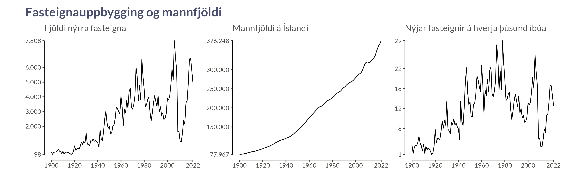
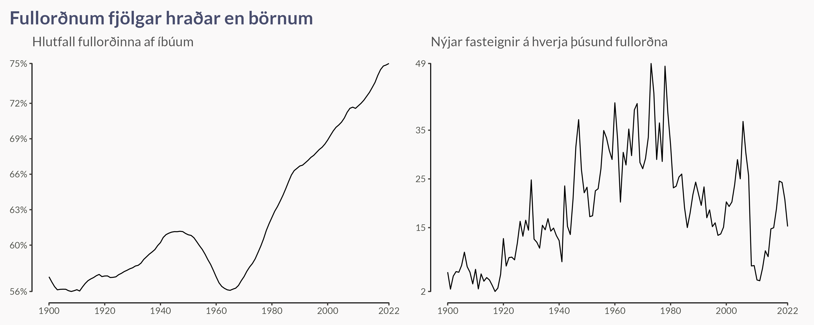

Þjóðskrá heldur úti gögnum um fjölda íbúða eftir byggingarári, sem ná alveg aftur til ársins 1900. Skoðum þessi gögn og berum þau saman við gögn Hagstofunnar um mannfjölda eftir kyni og aldri. Við ætlum reyndar ekki að skoða þetta eftir kyni, en það er lítið mál að súmmera upp þessar tölur.
Við sjáum að neðan að hreinn fjöldi nýrra fasteigna hækkaði stöðugt frá 1900 þangað til hann náði hámarki rétt fyrir 1980. Árlegur fjöldi var svo aðeins lægri þangað til að öðru hámarki var náð rétt fyrir fjármálahrunið.
En fólki er alltaf að fjölga svo það er ekki nóg að horfa bara á hreinan fjölda, við viljum skoða fjöldann á þúsund íbúa. Á þeim skala sjáum við að þótt það voru byggðar fleiri fasteignir alls eftir 2000 heldur en kringum 1970 þá voru íslendingar mun fleiri og fasteignafjöldinn á þúsund íbúa því minni.

En það er heldur ekki nóg að skoða fjöldann út frá íbúum alls. Það eru fá börn og unglingar sem þurfa að eiga fasteign og því er betra að horfa á fjölda nýrra fasteigna á hverja þúsund fullorðna íbúa (20 ára og eldri). Á þeim skala verður munurinn á uppbyggingunni kringum 1970 og 2006 ennþá meiri, enda sjáum við hér að neðan að fullorðnum hefur fjölgað hraðar en börnum síðustu 60 árin.

Hvenær hefði hentað Arnari að vera að leita sér að íbúð? Ef við skoðum fjölda nýbyggðra fasteigna per 1.000 íbúa jafngamlir og Arnar er í dag sjáum við að árið 2021 voru byggðar 940 íbúðir á hverja 1.000 jafnaldra, það er næstum ein á mann! En sú tala náði hápunkti árið 1973 þegar það voru byggðar 2139 íbúðir á hverja 1.000, það eru rúmlega tvær á mann! Það er því augljóst að Arnar hefði viljað vera ungur maður árið 1973 til að geta staðið í almennilegu fasteignabraski.